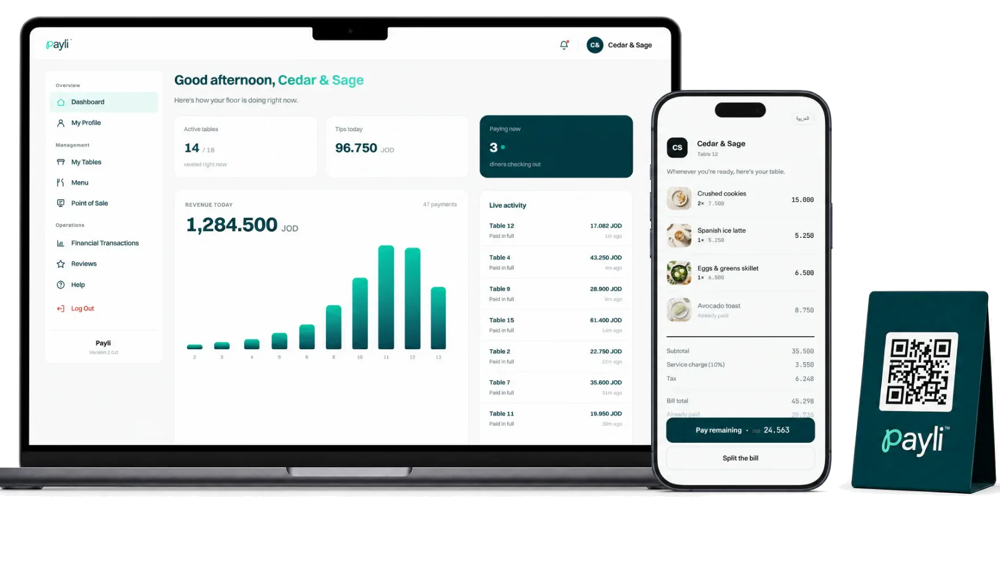
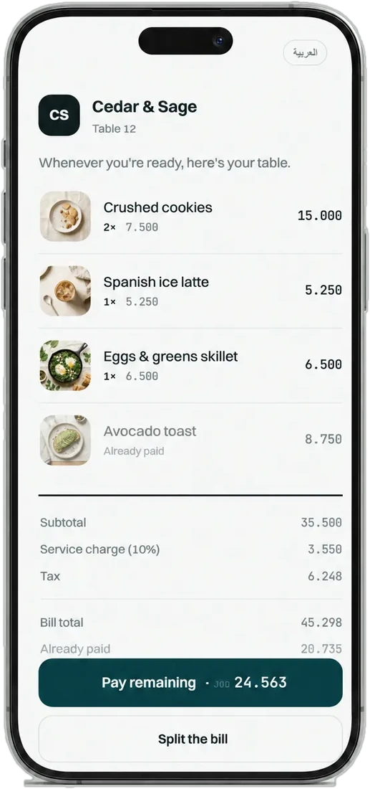
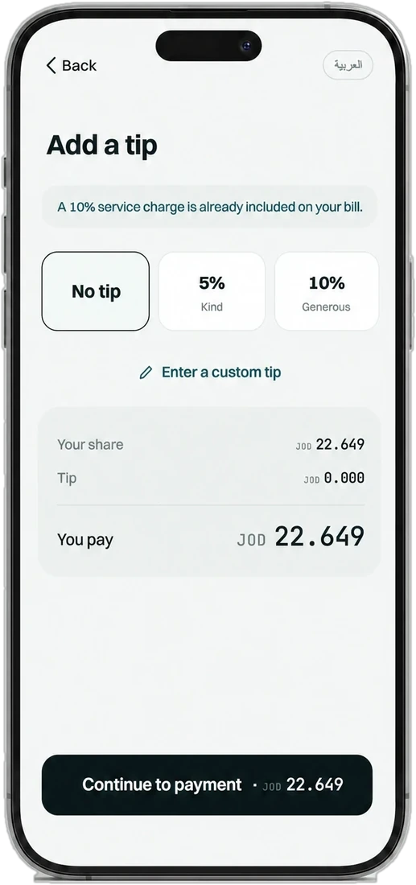
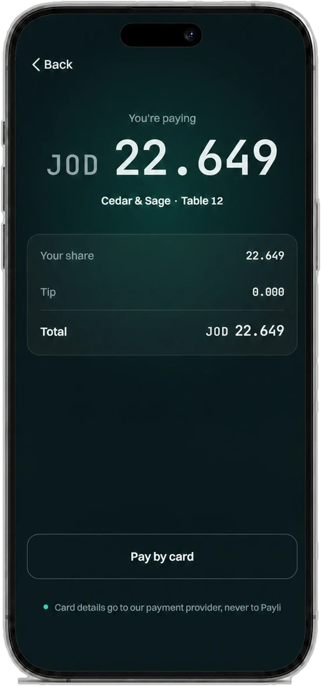
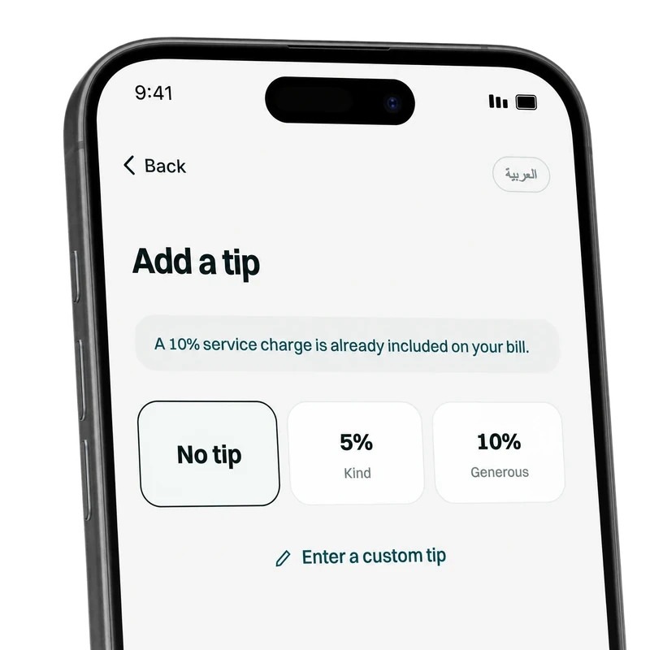

The bill comes to the table. Nobody waits for it.
Guests scan the QR on their table, see the itemised bill, split it, tip and pay from their own phone, in English or Arabic. Your floor sees every table live, your POS gets the sale, and every fils is on record.

Scan. Split. Tip. Pay.
Four steps from "we're done" to paid. No app to download, no account, no Wi-Fi password.
The bill opens itself
One QR per table opens the itemised bill in the browser.

Evenly, by item or any amount
Service and tax follow the items. Nobody pays twice.

A thank-you in one tap
5%, 10%, custom or none. Payli takes no fee on tips.

On the provider's secure page
Visa or Mastercard, plus Apple Pay and Google Pay where enabled.

The last five minutes of dinner are the slowest part of it.
The meal is over, but the table isn't free. Everyone waits on the same few steps: get the check, bring the machine, work out who owes what.
Waiting to be allowed to leave
Catching a server's eye, waiting for the check, waiting for the card machine, then doing arithmetic at the table.
With PayliThey pay from their own phone the moment they're ready, and split it fairly in a few taps.
Busy hands at the busiest moment
Printing checks, walking terminals across the room and splitting bills by hand while new tables are waiting.
With PayliThe floor board shows which tables are paying and paid, so staff stay on the floor.
Tables held, slips to reconcile
Seats stay occupied after the meal ends, and the day closes with a pile of slips to match against the bank.
With PayliEvery bill, split and tip is recorded to the fils and exports as one clean file.
Run a table from scan to settled.
Tap through the guest's phone. The restaurant's dashboard updates as it happens: the floor, the payment, the POS sync and the record.
One dashboard runs the floor, the payments and the close.
In a web browser, on any tablet, phone or laptop. Nothing to install, nothing to buy.
Every payment, itemised, as it happens
Table, bill, tip, total, method and time. Print receipts, refund with a reason, export CSV.

Exact to the fils
Every bill, split, tip and refund in a double-entry, append-only ledger, ready to match your provider's settlement.
.000Live floor
Bill open, paying now, paid: readable from two metres, with QR codes for every table.
Menu manager
Imported from your POS where supported, with Arabic item names.
POS sync & ratings
The sync status of every paid bill with a retry button, and every rating with its table and time.
Faster tables, freer staff, numbers that close.
Every outcome comes from something the product does. Ask us to show any of them in the demo.
Tables free up sooner
Guests pay the moment they're ready, instead of waiting for the check and the card machine.
QR → live bill → split → payStaff stay on the floor
No terminals walked across the room. The board shows who has paid.
Live floor boardSplitting stops being a problem
Service and tax follow the items; nobody pays twice.
Proportional, to the filsTips at the right moment
Asked while the service is fresh; the full tip goes to the restaurant.
No Payli fee on tipsThe day closes exact
Every bill, split, tip and refund, ready to match your provider's settlement.
Double-entry ledger · CSVNo re-keying at the till
The fully paid sale goes back to your POS with items, tax, tip and tender.
POS connector · in developmentYou hear about every table
Ratings and comments arrive while the guest is still there.
1–5 stars after paymentNothing to install or buy
Guests use their own phones; your team uses the dashboard in a browser.
No app · no hardwareWhat are the last five minutes worth to you?
On busy nights
Minutes saved × seatings × tables
Freed time ÷ average seating length × busy nights
Extra seatings × average bill
An illustration built only from the numbers you enter. It is capacity, not a forecast: it turns into revenue only on nights when guests are waiting for a table. Payli has no measured results from live restaurants yet.
Payli is software. It never holds your money.
Guests pay through a licensed payment provider, and the money settles directly into your own merchant account. You stay the merchant of record.
Entered on the provider's own secure page. Payli never sees or stores the full card number or security code; 3-D Secure applies where the bank requires it.
Your team starts a refund in the dashboard; the provider returns it to the guest's original card. Payli never funds or holds a refund.
Payli invoices its own fees separately and takes no fee on tips. Your provider's card fees follow your merchant agreement.
Honest about the beta: Payli is not a bank or a licensed payment company; the provider holds the licence. Payli hasn't yet been independently audited or certified, including against PCI DSS, and doesn't claim to be.
Works alongside the systems you already run.
The bill comes from your POS, the payment goes through a licensed provider to your account, and the finished sale lands back in your POS. Here's exactly where each connection stands.
Imports your menu and posts every fully paid table back as a sale. Being tested on AQUA's test server.
Reads the live order on each table. Staff confirm the paid order in the Foodics cashier.
Planned together with Foodics, which acquired POSRocket.
Designed to post each fully paid table as a check with its tender and tip.
Visa and Mastercard, plus Apple Pay and Google Pay where the provider enables them, on its own secure page. CliQ isn't supported.
Status as of November 2026. In development: being built and tested against the vendor's test system; not yet live at any restaurant. Planned: not built yet.
From a 15-minute demo to your first paid table.
We're choosing a small first group of restaurants in Amman.
- 1See it on your phone
A 15-minute demo of the guest's side and yours.
- 2Check the fit
We confirm your POS, payment provider and what's ready for you.
- 3Set up your venue
We create your venue, connect your POS and bring in your menu.
- 4A QR on every table
Add your tables and print a QR code for each one.
- 5Brief the team
Floor board, receipts and refunds take minutes. Then your first tables pay.
Hardware to buy. Guests use their own phones; staff use a browser.
Payli fee on tips. The full tip goes to the restaurant.
Fees billed separately, never deducted from your payments.
No price list. Pricing depends on your venue; we walk you through it in the demo.
Questions restaurant owners ask.
Bring Payli to your floor.
Book a 15-minute demo and see Payli on your own phone, with your own menu.
info@payli.io · +962 7 9953 8005 · Amman, Jordan